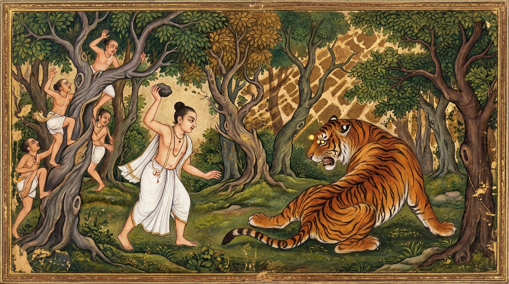

10. සඤ්ජීව ජාතකය (150)
“අසන්තං යො පග්ගණ්හාතී” (අසත්පුරුෂයන්ට යමෙක් අනුග්රහ කරයිද) යන මේ දේශනාව ශාස්තෲන් වහන්සේ වේළුවනාරාමයෙහි වැඩවසන කල්හි, අජාසත් රජු විසින් අසත්පුරුෂයන්ට අනුග්රහ දැක්වීම අරබයා වදාරන ලදී. හෙතෙම බුදුරජාණන් වහන්සේට එරෙහි වූ, දුසිල් වූ, පවිටු ස්වභාව ඇති දේවදත්තයන් කෙරෙහි පැහැදී, ඒ අසත්පුරුෂයාට අනුග්රහ දක්වමින් “ඔහුට සත්කාර කරන්නෙමි”යි බොහෝ ධනය වියදම් කොට ගයා ශීර්ෂයේ විහාරයක් කරවා, ඔහුගේම බහට අවනතව, දැහැමි රජෙකු වූ සෝවාන් ඵලයට පත් ආර්ය ශ්රාවක පියාණන් ඝාතනය කරවා, තමාට සෝවාන් වීමට තිබූ උපනිශ්රය සම්පත්තිය බිඳගෙන මහත් විනාශයකට පැමිණියේය. ඒ දේවදත්තයන් පොළොව පලාගෙන ගිය බව අසා “කිම මමත් පොළොවෙහි ගිලෙයිදැ”යි බියෙන් හා ත්රාසයෙන් රජසැප නොලබයි; යහනෙහි නිදි සුවයක් නොලබයි; තියුණු වේදනාවෙන් පෙළෙන ඇත් පැටවෙකු මෙන් කම්පා වෙමින් හැසිරෙයි. හෙතෙම පොළොව පැලෙන්නාක් මෙන්ද, අවීචියෙන් ගිනිදැල් නික්මෙන්නාක් මෙන්ද, තමා පොළොවට ගිලී යන්නාක් මෙන්ද, ගිනිගත් ලෝහ පොළොවක උඩුකුරුව සතප්පවා යකඩ උල්වලින් කොටන්නාක් මෙන්ද දකියි. ඒ නිසා පහර කෑ කුකුළෙකු මෙන් මොහොතක් පාසා කම්පා වන්නට විය; ඔහුට සැනසීමක් නම් නොවිණි. හෙතෙම සම්මා සම්බුදුරජාණන් වහන්සේ දැකීමට කැමති විය; සමාව ගැනීමට කැමති විය; ප්රශ්න විචාරීමට කැමති විය. එහෙත් තමාගේ අපරාධය බලවත් බැවින් උන්වහන්සේ වෙත එළැඹෙන්නට නොහැකි විය.
ඉක්බිති රාජගහ නුවර කාර්තික පුර පසළොස්වක රාත්රිය පැමිණි කල්හි, දේව නගරයක් මෙන් නගරය අලංකාර කර තිබිණි. සඳලුතලයේ ඇමති පිරිස පිරිවරාගෙන රන් අසුනක හුන් රජතුමා, නුදුරෙහි සිටින ජීවක කෝමාරභච්චයන් දැක මෙසේ සිතුවේය: “ජීවකයන් කැටුව සම්මා සම්බුදුරජාණන් වහන්සේ වෙත යන්නෙමි. එහෙත් ‘යහළු ජීවකය, මම තනිව යන්නට නොහැක්කෙමි, එව, මා ශාස්තෲන් වහන්සේ වෙත කැඳවාගෙන යන්න’යි ඍජුවම කීම මට නොහැකිය. එබැවින් වක්රෝක්තියෙන් රාත්රියේ අලංකාරය වර්ණනා කොට ‘අද දින අපගේ සිත පහදින යම් ශ්රමණ බ්රාහ්මණයෙකු ඇසුරු කරන්නේ නම්, කවරෙකු ඇසුරු කරමුදැ’යි විමසන්නෙමි. එය අසා ඇමතිවරු තම තමන්ගේ ශාස්තෘවරුන්ගේ ගුණ කියනු ඇත. ජීවකයන්ද සම්මා සම්බුදුරජාණන් වහන්සේගේ ගුණ වර්ණනා කරනු ඇත. එවිට ඔහු කැටුව ශාස්තෲන් වහන්සේ වෙත යන්නෙමි.” ඉක්බිති රජතුමා පද පහකින් රාත්රිය වර්ණනා කළේය:
- “භවත්නි, සඳ එළිය ඇති මේ රාත්රිය ඒකාන්තයෙන්ම සිත්කළුය.
- භවත්නි, සඳ එළිය ඇති මේ රාත්රිය ඒකාන්තයෙන්ම අතිශයින් රූමත්ය.
- භවත්නි, සඳ එළිය ඇති මේ රාත්රිය ඒකාන්තයෙන්ම දර්ශනීයය.
- භවත්නි, සඳ එළිය ඇති මේ රාත්රිය ඒකාන්තයෙන්ම ප්රසාද එළවන්නේය.
- භවත්නි, සඳ එළිය ඇති මේ රාත්රිය ඒකාන්තයෙන්ම රමණීයය.
අද දින අපගේ සිත පහදින යම් ශ්රමණ බ්රාහ්මණයෙකු ඇසුරු කරන්නේ නම්, කවරෙකු ඇසුරු කරමුද?” (දී· නි· 1.150).
එවිට ඇමතිවරු එක් එක්කෙනා මෙසේ ගුණ වර්ණනා කළහ:
- එක් ඇමතිවරයෙක් පූර්ණ කස්සපගේ ගුණ වර්ණනා කළේය.
- එක් ඇමතිවරයෙක් මක්ඛලි ගෝසාලගේ ගුණ වර්ණනා කළේය.
- එක් ඇමතිවරයෙක් අජිත කේසකම්බලගේ ගුණ වර්ණනා කළේය.
- එක් ඇමතිවරයෙක් පකුධ කච්චායනගේ ගුණ වර්ණනා කළේය.
- එක් ඇමතිවරයෙක් සඤ්ජය බෙලට්ඨිපුත්තගේ ගුණ වර්ණනා කළේය.
- එක් ඇමතිවරයෙක් නිගණ්ඨ නාටපුත්තගේ ගුණ වර්ණනා කළේය.
රජතුමා ඔවුන්ගේ කතා අසා නිහඬ විය. හෙතෙම මහාමාත්ය වූ ජීවකයන්ගේ කතාවම බලාපොරොත්තු විය. ජීවකයන්ද “රජතුමා මා අමතා කතා කළ විටම පිළිතුරු දෙන්නෙමි”යි නුදුරෙහි නිහඬව සිටියේය. ඉක්බිති රජතුමා ඔහු අමතා “යහළු ජීවකය, ඔබ කුමක් හෙයින් නිහඬව සිටින්නෙහිද?”යි විමසීය. එම ක්ෂණයේදී ජීවක තෙමේ අසුනෙන් නැගී භාග්යවතුන් වහන්සේ වැඩසිටින දිශාවට ඇඳිලි බැඳ, “දේවයන් වහන්ස, ඒ භාග්යවත් වූ අරහත් වූ සම්මා සම්බුදුරජාණන් වහන්සේ එක්දහස් දෙසිය පනහක් වූ භික්ෂු සංඝයා සමඟ අපගේ අඹ වනයෙහි වැඩවසන සේක. ඒ භාග්යවතුන් වහන්සේ පිළිබඳ මෙබඳු කල්යාණ කීර්ති ඝෝෂාවක් පැන නැගුනේය” යි නව අරහාදී බුදුගුණ පවසා, උපතේ පටන් සිදුවූ පෙරනිමිති ආදියද දක්වා බුදුරජාණන් වහන්සේගේ ආනුභාවය ප්රකාශ කොට, “දේවයන් වහන්ස, ඒ භාග්යවතුන් වහන්සේ ඇසුරු කරන සේක්වා! ධර්මය අසන සේක්වා! ප්රශ්න විචාරන සේක්වා!”යි කීවේය.
රජතුමා මනදොළ සපිරුණේ වී, “එසේ නම් යහළු ජීවකය, ඇතුන් යෙදූ යානා සූදානම් කරවන්න”යි කියා, යානා සූදානම් කරවා මහත් රාජානුභාවයෙන් ජීවක අඹ වනයට ගොස්, එහි මණ්ඩලමාළයෙහි (රැස්වීම් ශාලාවෙහි) භික්ෂු සංඝයා පිරිවරා වැඩසිටින තථාගතයන් වහන්සේව දැක, නිශ්චල ජලය මැද පවතින මහා නැවක් මෙන් නොසැලෙන භික්ෂු සංඝයා දෙස එහා මෙහා බලා, “මෙබඳු වූ පිරිසක් මින් පෙර කිසිදා නොදකින ලද්දෙමි”යි ඉරියව් පැවැත්මෙහිම පැහැදී, සංඝයාට ඇඳිලි බැඳ ස්තුති කොට, භාග්යවතුන් වහන්සේට වැඳ එකත්පසෙක හිඳ සාමඤ්ඤඵල (මහණකමේ ඵල) පිළිබඳ ප්රශ්නය විචාළේය. ඉක්බිති භාග්යවතුන් වහන්සේ ඔහුට බණවර දෙකකින් හෙබි සාමඤ්ඤඵල සූත්රය (දී· නි· 1.150 ආදිය) දේශනා කළ සේක. හෙතෙම සූත්ර දේශනාව අවසානයේ සතුටු සිතින් භාග්යවතුන් වහන්සේගෙන් සමාව ඉල්ලා, අසුනෙන් නැගිට පැදකුණු කොට පිටත්ව ගියේය. ශාස්තෲන් වහන්සේ රජු පිටත්ව ගිය නොබෝ වේලාවකින් භික්ෂූන් අමතා, “මහණෙනි, මේ රජතෙමේ (ගුණ ධර්ම) හාරා දැමුවේය; මහණෙනි, මේ රජතෙමේ තමා නසාගත්තේය. මහණෙනි, ඉදින් මේ රජ රජසැප උදෙසා දැහැමි ධර්මරාජික වූ පියාණන් ජීවිතක්ෂයට පත් නොකළේ නම්, මේ අසුනෙහිදීම ඔහුට රජස් රහිත වූ, මලකඩ රහිත වූ ධර්ම චක්ෂුසය (සෝවාන් මාර්ග ඥානය) පහළ වන්නට තිබුණි. දේවදත්තයන් නිසා අසත්පුරුෂ ආශ්රය කොට සෝවාන් ඵලයෙන් පිරිහුණේය” යි වදාළ සේක.
පසුදින භික්ෂූහු දම් සභාවෙහි කථාවක් මතු කළාහුය: “ඇවැත්නි, අජාසත් රජ තෙමේ අසත්පුරුෂ ආශ්රය කොට, දුසිල් පවිටු දේවදත්තයන් නිසා පීතෘ ඝාතක කර්මය කළ බැවින් සෝවාන් ඵලයෙන් පිරිහුණේය; දේවදත්තයන් විසින් රජු විනාශ කරන ලද්දේය”. ශාස්තෲන් වහන්සේ වැඩමවා, “මහණෙනි, කවර නම් කථාවකින් යුක්තව හුන්නාහුදැ”යි විචාරා, “මෙබඳු කතාවකින්” යැයි පැවසූ කල්හි, “මහණෙනි, අජාසත් රජ දැන් පමණක් නොව පෙරත් අසත්පුරුෂයන්ට අනුග්රහ දැක්වීමෙන් මහත් විනාශයකට පත් විය. පෙරත් අසත්පුරුෂ අනුග්රහයෙන් තමාම නසා ගත්තේය” යි වදාරා අතීත කතාව ගෙනහැර දැක්වූ සේක.
අතීතයෙහි බරණැස් නුවර බ්රහ්මදත්ත රජු රාජ්යය කරන කල්හි බෝසතාණන් වහන්සේ මහා ධනවත් බමුණු කුලයක උපත ලබා, වැඩිවියට පැමිණ තක්සලාවට ගොස් සියලු ශිල්ප ඉගෙන, බරණැස දිසාපාමොක් ඇදුරු වී පන්සියයක් මානවකයන්ට ශිල්ප ඉගැන්වූහ. ඒ මානවකයන් අතර සංජීව නම් එක් මානවකයෙක් විය. බෝසතාණන් වහන්සේ ඔහුට මළවුන් නැගිටුවන මන්ත්රයක් ඉගැන්වූහ. හෙතෙම මළවුන් නැගිටුවන මන්ත්රය පමණක් ඉගෙන, එය ආපසු හරවන (මැඩපවත්වන) මන්ත්රය ඉගෙන නොගත්තේය. එක් දිනක් මානවකයන් සමඟ දර පිණිස කැලයට ගොස් එක් මළ ව්යාඝ්රයෙකු දැක මානවකයන් අමතා, “භවත්නි, මේ මළ ව්යාඝ්රයාට මම පණ දෙන්නෙමි”යි කීවේය. මානවකයෝ “ඔබට එය කළ නොහැකිය” යි කීහ. “තොප බලා සිටියදීම මම ඌට පණ දෙන්නෙමි”යි ඔහු කීවේය. “ඉදින් මානවකය, හැකිනම් පණ දෙව”යි පවසා ඒ මානවකයෝ ගසකට නැග්ගාහුය. සංජීව තෙමේ මන්ත්රය ජප කොට මළ ව්යාඝ්රයාට ගල් කැටයකින් පහර දුන්නේය. ව්යාඝ්රයා පණ ලබා නැගිට, වේගයෙන් අවුත් සංජීවගේ ගෙල සපාකා ජීවිතක්ෂයට පමුණුවා එහිම ඇද වැටුණේය. සංජීවද එහිම ඇද වැටුණේය. දෙදෙනාම එකම තැන මියගොස් වැටුණාහුය.

මානවකයෝ දර රැගෙන අවුත් ඒ පුවත ආචාර්යවරයාට දැන්වූහ. ආචාර්යවරයා මානවකයන් අමතා, “දරුවනි, අසත්පුරුෂයන්ට අනුග්රහ කරන්නා වූ, නුසුදුසු තැන සත්කාර සම්මාන කරන්නා වූ අය මෙබඳු දුක් ලබන්නාහුමය” යි පවසා මේ ගාථාව වදාළේය:
“යමෙක් අසත්පුරුෂයාට අනුග්රහ දක්වයිද, යමෙක් අසත්පුරුෂයා ඇසුරු කරයිද, (ඒ අසත්පුරුෂයා විසින්) ව්යාඝ්රයා විසින් සංජීවක මානවකයා කා දමන ලද්දාක් මෙන්, ඔහුම ගොදුරක් කරගනු ලබයි (විනාශ කරනු ලබයි).”
එහි අසන්තං යනු ත්රිවිධ දුශ්චරිතයෙන් යුක්ත වූ, දුසිල් වූ, පවිටු ස්වභාව ඇත්තාය. යො පග්ගණ්හාති යනු ක්ෂත්රිය ආදීන් අතරින් යම් කිසිවෙක් මෙබඳු දුසිල් වූ පැවිද්දෙකුට සිවුරු ආදිය පූජා කිරීමෙන් හෝ, ගිහියෙකුට යුවරජ-සෙනෙවි තනතුරු ආදිය දීමෙන් හෝ අනුග්රහ දක්වයිද, සත්කාර සම්මාන කරයිද යන අර්ථයි. අසන්තං චූපසෙවති යනු යමෙක් මෙබඳු වූ අසත්පුරුෂ දුසිල් අයෙකු සේවනය කරයිද, ඇසුරු කරයිද, පයිරුපාසනය කරයිද යන්නයි. තමෙව ඝාසං කුරුතෙ යනු ඒ දුසිල් වූ පාපී පුද්ගලයා විසින්, අනුග්රහ දැක්වූ ඒ තැනැත්තාවම කා දමනු ලබයි; විනාශයට පමුණුවනු ලබයි. ඒ කෙසේද යත්? බ්යග්ඝො සඤ්ජීවිකො යථා (ව්යාඝ්රයා සහ සංජීවක මෙන්): යම් සේ සංජීව මානවකයා විසින් මන්ත්ර ජප කොට මළ ව්යාඝ්රයාට ජීවිතය ලබා දීමෙන් අනුග්රහ දක්වන ලද්දේද, (ඒ ව්යාඝ්රයා විසින්) තමන්ට ජීවිතය ලබා දුන් සංජීවකවම දිවි තොර කොට එතැනම හෙළන ලදී. එසේම අන් යමෙක් අසත්පුරුෂයන්ට අනුග්රහ කරයිද, ඒ දුසිල් තැනැත්තා තමාට අනුග්රහ කළ ඔහුවම විනාශ කරයි. මෙසේ අසත්පුරුෂයන්ට අනුග්රහ කරන්නෝ විනාශයට පැමිණෙති.
බෝධිසත්වයන් වහන්සේ මෙම ගාථාවෙන් මානවකයන්ට දහම් දෙසා, දානාදී පින්කම් කොට කම් වූ පරිදි මියගියහ.
ශාස්තෲන් වහන්සේ මේ ධර්ම දේශනාව ගෙනහැර දක්වා ජාතකය ගළපා වදාළ සේක: “එකල මළ ව්යාඝ්රයාට පණ දුන් මානවකයා වනාහි දැන් මේ අජාසත් රජුය. දිසාපාමොක් ආචාර්යවරයා වූයේ මම ම වෙමි”.
දසවන වූ සඤ්ජීව ජාතක වර්ණනාවයි.
පසළොස්වන වූ කකණ්ටක වර්ගයයි.
උපරිම පණ්ණාසකය නිමියේය.
එහි උද්දානය (මාතෘකා එකතුව) මෙසේය:
ගෝධ, සිඟාල, විරෝචන, නඟුට්ඨ, රාධ, කාක, පුප්ඵරත්ත, සිඟාල, ඒකපණ්ණ සහ සඤ්ජීව (යන ජාතක දසයයි).
ඉක්බිති වර්ග උද්දානය:
අපණ්ණක, සීල, කුරුංග, කුලාවක, අත්ථකාම, ආසීස, ඉත්ථි, වරුණ, අපායි (යන වර්ගද),
ලිත්ත, පරෝසත, හංසි, කුසනාළි, සම්පදාන සහ කකණ්ටක යනු (වර්ග පසළොසයි). ජාතක කතා එකසිය පනහකි.
ඒකක නිපාත වර්ණනාව නිමියේය.
(පළමු කොටස නිමියේය).
ඒ භාග්යවත් වූ අරහත් වූ සම්මා සම්බුදුරජාණන් වහන්සේට නමස්කාරය වේවා!
දෙවන කොටස